Watermarking,
Deepfakes & Provenance
Proving who made it, and whether a machine did
Albert No · Yonsei University
Trustworthy AI · 2026
Contents
Two Flavors of Watermark
Prove ownership, or flag AI output
The Problem
AI output is indistinguishable from human work.
- Essays, news, code, photos, voices
- No mark says "a machine made this"
- And no mark says "this model is mine"
A watermark is a hidden signal we add on purpose.
What a Watermark Is
An invisible mark hidden inside content.
- A human reader does not notice it
- A detector with a secret key does
- Old idea: banknotes, paper, photos
New twist: hide the mark in what a model generates.
Two Flavors
The word "watermark" covers two different goals.
Model watermark
Prove a model is yours. Catch a stolen copy.
Output watermark
Prove a piece of content is AI-generated.
Same word, opposite questions.
Model Watermarks: Prove Ownership
Plant a secret trigger only the owner knows.
- Train the model to react to a hidden cue
- A normal user never sees the reaction
- The owner queries the cue to claim the model
Like a hidden signature baked into the weights.
Output Watermarks: Flag the Content
Tilt generation so the output carries a hidden pattern.
- The text or image still looks normal
- A detector reads the pattern back out
- Verdict: human-written or machine-made
This lecture focuses on output watermarks.
Why We Care
Flagging AI content has real stakes.
- Schools: was this essay written by a model?
- Elections: is this a fabricated quote?
- Courts: is this photo evidence genuine?
Trust online depends on telling real from synthetic.
Watermark vs Detector
Two separate ideas, often confused.
Watermark
The generator cooperates: it plants a signal as it writes.
Detector
A guesser looks at finished text with no planted signal.
A planted signal is far more reliable than a guess.
Text Watermarking
The green-list rule and its detector
How a Model Writes
A language model writes one word at a time.
- Each step: a score for every possible next word
- It samples one, then repeats
- Vocabulary: tens of thousands of "tokens"
A token is a word or word-piece the model picks from.
The Green-List Idea
At each step, secretly split the vocabulary in two.
- Green list: favored words
- Red list: the rest
- Nudge the model to prefer green
Splitting the Vocabulary
A secret key picks the green list fresh at each step.
The split looks random to anyone without the key.
The Nudge
Add a small bonus to every green word's score.
Bigger $\delta$ ⇒ stronger watermark, but less natural text.
Reading It Back
The detector knows the key, so it knows the green list at each step.
- Re-derive which words were green
- Count how many used words are green
- Too many green ⇒ watermarked
No access to the model needed, just the key.
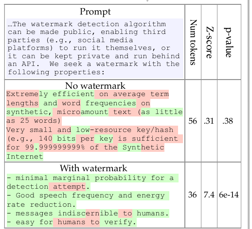
The Telltale Fraction
Say the green list is half the vocabulary.
Human text
Ignores the secret split. About 50% green by chance.
Watermarked text
Pushed toward green. Maybe 80% green.
The gap between 50% and 80% is the signal.
A Detection Threshold
Two bells: human text vs watermarked text. Pick a line between them.
Right of the line ⇒ call it watermarked.
The Danger: False Positives
A false positive = flag human text as AI by mistake.
False-positive rate
The chance a real human clears the threshold by pure luck.
We must keep this rate tiny: accusations are costly.
Length Beats Luck
Could a human hit 80% green by chance? Over a long passage, no.
The longer the text, the safer the verdict: the z-score grows like $\sqrt{T}$.
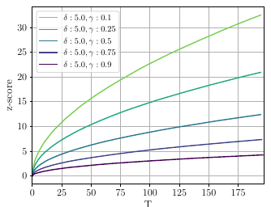
The One-Knob Tradeoff
$\delta$ is the single dial.
- Larger $\delta$: easier to detect, shorter text needed
- Larger $\delta$: more forced word choices, odder prose
Detectability vs quality: the central watermark tradeoff.
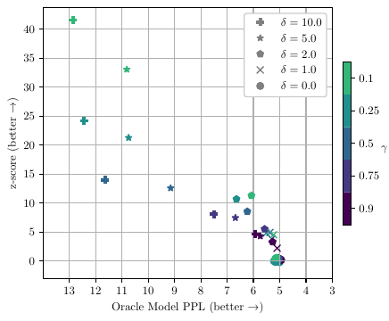
Quality and Robustness
Keep it natural, survive edits
The Quality Worry
Forcing green words can degrade writing.
- The best word might be on the red list
- Picking second-best, repeatedly, shows
- Users notice clumsy phrasing
Can we watermark without hurting quality?
Distortion-Free Watermarks
Yes: hide the mark in the randomness of sampling.
Distortion-free
The watermarked text follows the model's exact word distribution. On average, quality is untouched.
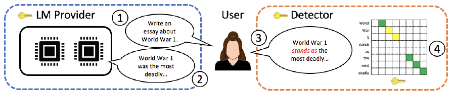
The Trick: Reused Randomness
Sampling already needs random numbers. Derive them from a key.
- Key + position ⇒ a fixed "random" seed
- Same seed picks the same word
- Detector replays the seed, checks the match
The choice looks random but is secretly reproducible.
Undetectable Watermarks
A 2024 result: a watermark you cannot tell is there.
- Without the key, output looks perfectly normal
- No quality loss provable by any test
- With the key, the signal is clear
The Robustness Worry
People edit AI text before sharing it.
- Fix a word, reorder a sentence
- Run it through a paraphraser
- Translate to another language and back
Does the hidden signal survive?
Small Edits Survive
A few changes barely dent the count.
- Each edit flips only a couple of words
- Most of the planted signal stays
- Distortion-free EXP: still detected past 50% substituted words
Green-list KGW fades sooner, yet holds to ~30%.
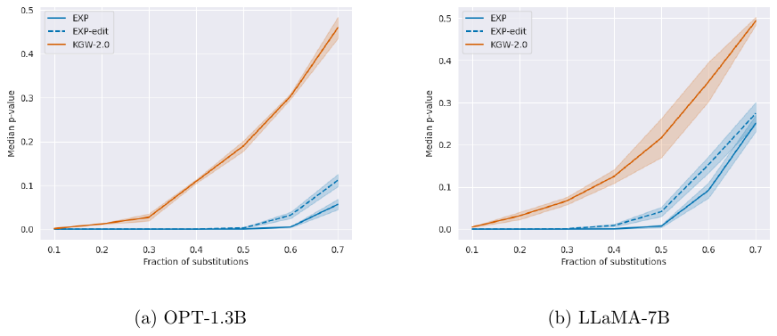
The Paraphrase Attack
Rewrite the text with another model (DIPPER).
- New words ⇒ green count sinks toward chance
- Evades watermarks, GPTZero, DetectGPT
- One detector: 70% → 5% caught
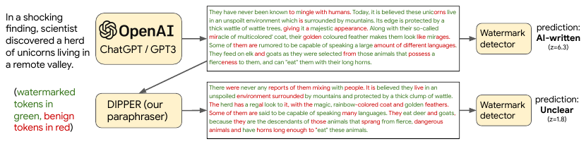
Their fix: the provider keeps a database of all its outputs, and searches it.
The Impossibility Claim
Two claims, often quoted, worth stating precisely.
- Recursive paraphrasing weakens every detector tested
- As AI text nears human text, a guessing detector nears a coin flip
- Spoofing: fake the mark to frame a human as AI
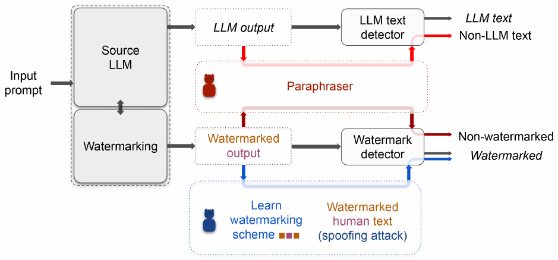
The coin-flip theorem is about detectors without a key, not planted watermarks.
Recursive Paraphrasing, Measured
- Clean watermark: AUROC 0.999, 99.8% caught at 1% false positives
- One DIPPER pass: AUROC 0.98, 81% caught
- Five passes: AUROC 0.76, 16% caught
- Best of five: AUROC 0.67, 8% caught
Each rewrite strips more of the mark; the text stays readable.
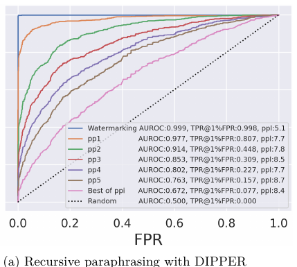
The Honest Limit
Measured on human paraphrases: the mark is diluted, not erased.
- Weaker per-word signal ⇒ need longer text
- Humans dilute more than DIPPER or GPT do
- ~800 tokens after strong human paraphrase
- Short passages: effectively unmarked
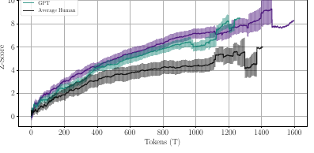
Watermarks deter casual misuse, not a motivated adversary on a short text.
Machine Attacks, Measured
- 200 tokens: paraphrase leaves AUC 0.86 to 0.97; copy-paste at 10% sinks to 0.65
- 600 tokens: paraphrase 0.92 to 0.99; copy-paste back near 0.8
- More tokens observed, more signal recovered
Hiding a marked snippet inside human text is the hardest case.
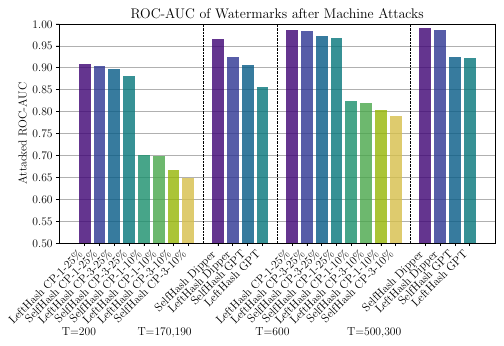
Production and Images
SynthID, and fragile pixels
SynthID-Text in Production
Google runs a green-list-style watermark in production.
- Watermarking live Gemini responses
- "Tournament sampling": same idea, tuned for quality
- Live test, ~20 million responses: no feedback drop
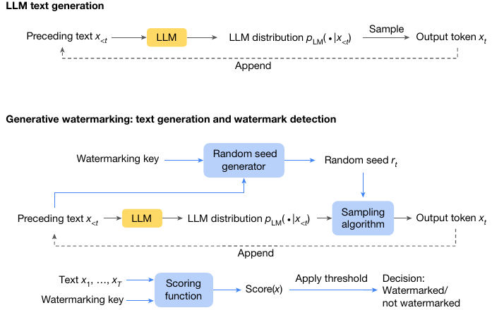
SynthID-Text, Measured
- Detection rate at 1% false positives, by text length
- 100 tokens: ~50%; 200 tokens: ~70%; 400 tokens: ~87%
- Beats plain Gumbel sampling at every length
- Longer replies, surer verdicts: same law as before
Short chat replies remain the weak spot.
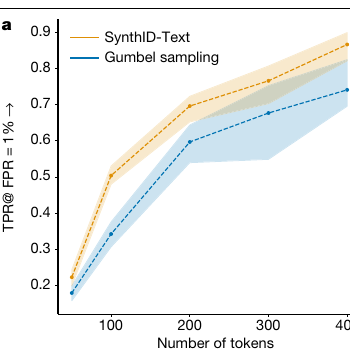
SynthID for Images
The same brand also watermarks images and audio.
- A faint pattern woven across the pixels
- Invisible to the eye, readable by a model
- Survives many common edits
Text, image, audio, video: one provenance family.
SynthID at Scale
By 2025, watermarking was no longer a lab demo.
- 10+ billion pieces of content marked
- Public "SynthID Detector" portal for checking
- Catch: it reads only Google's mark
Image Watermarks Are Fragile
Pixels are easy to damage.
- Cropping removes part of the pattern
- Screenshots and re-saves blur it
- Heavy compression scrubs fine detail
Each transform chips away at the hidden mark.
Cropping Erases the Mark
Keep one corner, lose the watermark spread across the rest.
Less surface ⇒ less signal ⇒ a missed detection.
Video Is Harder Still
Video = thousands of frames, all re-encoded.
- Platforms recompress on every upload
- Clipping keeps only a few seconds
- The mark must survive all of it
An open engineering challenge in 2025–26.
No Shared Standard
Each company ships its own watermark.
- One detector reads only its own brand
- Content from elsewhere goes unflagged
- No universal "made by AI" check exists
Fragmentation limits how useful watermarks can be.
Detecting AI Content
Why standalone detectors fail
The Tempting Shortcut
What if there is no watermark at all?
- A detector guesses from style alone
- No key, no cooperation from the generator
- Just "does this read like a machine?"
Many products promise exactly this: GPTZero and kin.
Why Detectors Struggle
Modern models write like fluent humans.
- The stylistic gap keeps shrinking
- Each new model breaks old detectors
- A light rewrite fools most of them
No hidden signal means only a fragile guess.
False Accusations
A wrong flag has real victims.
- Students accused of cheating they did not do
- Over half of non-native TOEFL essays flagged "AI"
- Native 8th-grade essays: at most 12% flagged
- No way to prove your innocence
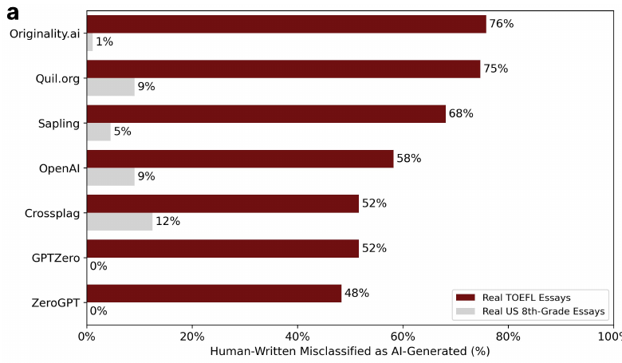
A confident detector that is sometimes wrong is dangerous.
OpenAI Pulled Its Detector
Six months after launch, OpenAI withdrew its own AI-text classifier.
- Caught only 26% of AI-written text
- Flagged 9% of human text as AI
- Pulled July 2023: "low rate of accuracy"
Even the model's maker could not detect it reliably.
Try It Yourself
Demo
- Paste your own writing into a free AI-text detector
- Paste a paragraph you asked a chatbot to write
- Compare the two scores, then lightly edit each
Watch how easily the verdict flips.
The Right Lesson
A planted watermark can be trusted. A guessed verdict often cannot.
Provenance you build in beats provenance you try to infer after the fact.
Deepfakes and Provenance
Content credentials and the law
Deepfakes
AI now fabricates people convincingly.
- Voice clones from a few seconds of audio
- Face swaps in live video calls
- Photoreal images of events that never happened
The fakes are good enough to fool most viewers.
Real Harms
Deepfakes already cause concrete damage.
- Voice-clone scams impersonating relatives
- Fake clips of politicians before elections
- Non-consensual fabricated images
Detection alone cannot keep up with the volume.
Case: The $25M Video Call
Hong Kong, January 2024. Engineering firm Arup.
- Finance worker joins a video call with the "CFO" and colleagues
- Every other participant: a deepfake, built from public footage
- 15 transfers, HK$200M ≈ US$25.6M: gone
Seeing a face on a live call no longer proves a person.
Deepfakes Meet Elections
January 2024: a fake Biden voice robocalled New Hampshire voters.
- Voice clone urged voters to skip the primary
- FCC fined the operative $6 million
- State criminal charges for voter suppression
First headline deepfake in a US national election.
The 2024 Reality Check
The feared election deepfake wave did not arrive.
- Meta: AI content under 1% of fact-checked election misinformation
- Cheap fakes and old lies still dominated
- Capability keeps improving; the risk is not gone
Calibrate: vigilance, not panic.
The Detection Arms Race
Deepfake detectors face the same trap as text detectors.
Best model in Facebook's 2020 challenge: 65% precision on unseen fakes.
The Deepfake Detection Challenge, Measured
- 2,114 teams, two final submissions each
- Dashed line: log loss 0.69 = predicting 50% for every video
- 60% of submissions landed at or below that coin-flip line
- Winner on the hidden set: log loss 0.43
Unseen fakes shrink even the best detector's edge.
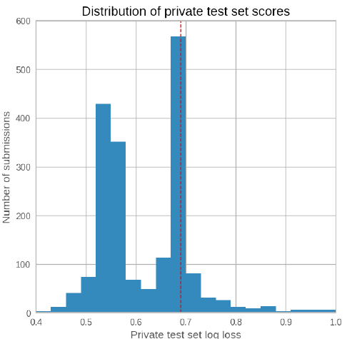
Flip the Problem
Stop chasing fakes. Instead, prove what is real.
- Sign genuine content at the source
- Attach a record of how it was made
- Unsigned content earns less trust
This is the idea of provenance.
C2PA Content Credentials
An industry standard for a tamper-evident label.
- Camera or app signs the file when created
- Each edit appends a signed record
- Any tampering breaks the signature
C2PA = Coalition for Content Provenance and Authenticity.
A Signed History
Credentials form a chain, each step signed.
captured
cropped
published
A reader can replay the chain and spot a broken link.
Credentials Go Mainstream
From niche camera to default phone hardware in two years.
Sony, Nikon, and Canon bodies added support by firmware.
The Strip Problem
A credential can simply be removed.
- A screenshot drops all the metadata
- No credential is not the same as "fake"
- Watermarks help where credentials are stripped
Watermarks and credentials are complementary, not rivals.
The Law Steps In
Disclosure of AI content is becoming a legal duty.
- China: labeling rules in force since 2025
- EU: AI Act transparency rules from 2026
- US: state patchwork on election deepfakes
Two very different regimes lead the way.
China Labels First
The strictest rules arrived first, effective 1 Sept 2025.
- Explicit label: visible tag on AI content
- Implicit label: mark hidden in the metadata
- Platforms must check and tag uploads
Both mechanisms from this lecture, mandated at once.
EU AI Act: Article 50
The EU's transparency rules apply from 2 Aug 2026.
- Providers: mark synthetic output, machine-readable
- Deployers: disclose deepfakes of real people
- Exceptions: art, satire, authorized law enforcement
Watermarks and credentials are how firms will comply.
Frontier 2025–26
Where the field is heading.
- Watermarks on by default: 10B+ items marked
- Provenance moving into camera hardware
- Labeling laws in force: China 2025, EU 2026
- Open: robustness, one cross-vendor standard
Key Takeaways
- Two flavors: prove ownership, or flag AI output
- Green-list text watermarks: a planted, countable signal
- Paraphrase dilutes the mark; short texts lose it
- Standalone detectors misfire; avoid false accusations
- Provenance and credentials: prove what is real
- Labels now required by law: China 2025, EU 2026
A planted mark beats a guessed verdict.
Build the proof in, do not guess it after.